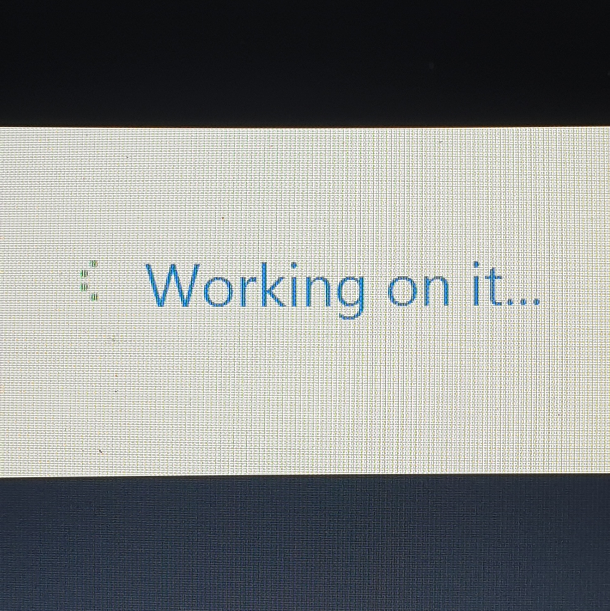
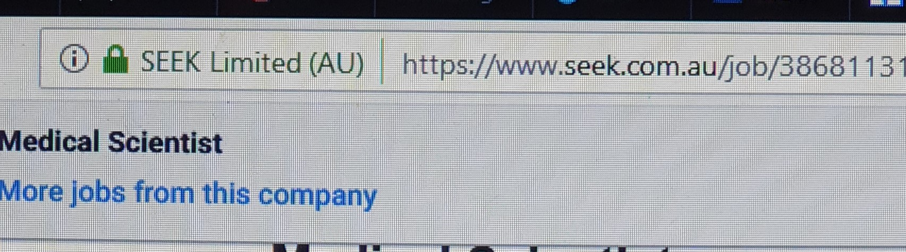

Personal Information

Ivapene Faumuina-Aiafi.
Student Number: s3702408.
Email: s3702408@student.rmit.edu.au.
I am from Samoa, which is one of the many beautiful little islands scattered all around the Pacific Ocean; looks like a tiny little dot on the map but to me, it is Paradise; the one place I call HOME.
I have been working as a Medical Laboratory Technician back home for the last 6 years,but I am here to broaden my horizon, so to speak, and to improve my knowledge in Laboratory Medicine enabling me to keep up with the war against bacteria!.
Interest in IT
Although my main focus is in Laboratory Medicine, I decided to take up a course in Information Technology because this area is simply a mystery to me. Yes we may use electronic devices everyday, interact with other people via several websites and countless chat platforms, it still fascinates (and terrifies) me how much I don't really know about IT.
In my country, there is no pathologist, which is a huge disadvantage, not to mention extremely expensive, as we have to pay to fly in experts from overseas countries like Australia, so they can properly analyse patients'tissue specimens and confirm their diagnoses. In illustration, some patients have to wait weeks or even months after their surgeries to find out that they actually have cancer or other terminal illnesses.
But imagine if there was some kind of platform which allows us from the islands to just simply, process patients'specimens, take quality photos and upload them to overseas pathologists so they can view and give confirmation on what diseases patients are suffering from, completely without having to spend as much money on flying them over, paying for their accomodation etc. This is what I envision how IT could help not only myself by broadening my skills at work, saves time and money, but also in the development of health services in my country.
Furthermore, I find myself driven to know more about IT because I want to be aware of what my kids are viewing on the internet, how to restrict what they can access and how to get the best out of the internet.
Ideal Job

This is the link to my ideal job
and shown below is the snapshot of said link.

Job Title is Medical Scientist for Victoria Infectious Diseases Reference Laboratory (VIDRL). This role entails having to perform diagnostic laboratory tests for infectious diseases during outbreaks and to provide support services in other disciplines of the laboratory in non-outbreak conditions.
Essentially, a Degree in Science or Applied Science, as well as experience in Microbiology are required. In addition, role requires one who is multidisciplined in all other aspects of the laboratory,in possession of excellent communication skills, a team player,well trained in handling medical laboratory equipments, health and safety requirements,well-versed in quality control procedures, issuing reports as well as complying with all National Association of Testing Authorities, Australia requirements.
I am a certified Medical Laboratory Technician with six years of experience working in the Samoan Clinical Pathology Laboratory.I have graduated with a Diploma in Medical Laboratory Science from the Pacific Paramedical Training Center in Wellington, New Zealand in 2017.I believe my skill-set and knowledge align with this job as I can perform diagnostic tests on patient specimens, that is, perform microbiological tests using aseptic technique, perform bacterial as well as tissue culture, read culture plates and perform further biochemical testing to confirm pathogen identification, accurately analyse and report results to clinicians, utilise Laboratory Information System to communicate relevant information to colleagues and clinicians regarding patient treatment, monitoring and care.
Despite having the experience as a Lab Technician, I still feel that I need to improve my knowledge and skills so I can perform my job better and with absolute confidence in the results obtained. I plan to graduate with honors as a Medical Laboratory Scientist from RMIT, engage cases more practically, secure placement in a medical hospital in Australia so I can observe and learn how things are done in the land down under as well as establishing good networking with inspirational mentors in my field.
Personal Profile
PERSONALITY TEST RESULTS:Myers-Briggs.
Personality Type : "The Campaigner"
Individual Traits: Extraverted - 58%, Intuitive - 76%, Feeling - 51%, Prospecting - 74%, Turbulent - 74%
Role : Diplomat
Strategy : Social Engagement
LEARNING STYLE TEST RESULTS:Myers-Briggs.
My Type: EFNP
Extravert - (1%)
iNtuitive - (41%)
Feeling - (50%)
Pereiving - (28%)
TEST MY CREATIVITY TEST www.testmycreativity.com
SCORE:86.07
These tests generally say that I have the personality of a "campaigner" meaning that I enjoy social situations, engage and relate well with other people. Learning style results show that I make some decisions based on what I feel while Creativity tests show that I do not always believe what is infront of me but rather boldly trying to satify my curiosity. Having good social and people skills can definitely be applied to building a good team to work with, as well as applying my best and creativity to mediate and resolve any issues while working with said team.
Project Ideas
Barcode and Fingerprint system for Clinical Laboratory in Samoa
OVERVIEW
For my project idea, I aim to form one that is of practical use to my country, specifically its health system. That is, I propose to establish a health barcode system and fingerprint system for our national hospital, specially for its clinical laboraty. An intra-network needs to be built first so that all laboratory computers are linked as well as laboratory website. There should also be an off-line option that should the internet fails (which happens often), it would be activated so that the service can continue.
MOTIVATION
Motivation for this project comes from personal experience. As I have mentioned before, I have been a Medical Laboratory Technician for more than six years, and it is a real struggle back home. Not only because we lack qualified personnel to competently and efficiently deal with the overwhelming number of patient requests per day but also because of the insufficient resources. At the moment, all specimens that are brought into the laboratory are registered manually into excel speadsheets by two receptionists which on a very busy day, can reach up to three. Specimens have been known to get lost because of the incompetent system which has caused major conflicts with both physicians and patients. But if this project could be implemented, not only will it save the patients unnecessary prolonged laboratory visits, heated arguments but can also free up the extra laboratory staff so that their time, effort and skills could be used in other disciplines of the severely understaffed lab
DESCRIPTION
The fingerprint system is so that when patients, bloods donors are brought into the lab for diagnostic tests or blood donation, they can present their fingerprints and the lab will be able to access information regarding previous laboratory visits, results, diagnoses and any tests ordered by physicians; this will prevent them having to present test order forms, saves time,and it will immediately prompt relevant disciplines of the laboratory to confirm if tests ordered are still available, reagents are in stock, laboratory staff need to take extra precaution when analysing certain patients'specimen. In addition, specimens that are brought into the lab are easily tagged, checked, monitored and traced. As tests are done, software will be able to analyse and prioritise according to urgency of request and severity of infection. Results from analysers will be extracted directly to corresponding folders which saves staff from having to manually enter results into system to compile reports.Once barcode of specimen is scanned, information will automatically pop up on computer screen. Similarly, when patient's fingerprints are scanned, their details, visit history and examination required will be available to be accessed by staff without the burden of having to probe them with questions, which can sometimes be embarrasing for patients.
TOOLS AND TECHNOLOGY
For this project to work, computers with high storage spaces, RAM and high speed microprocessors will need to be bought, as well as servers, functioning UPS'es, back-up system, barcode and fingerprint scanners, barcodes for specimens, patients and blood donors, hard drives for each computer for back up storage. The software will be installed into staff's computers as well as computers directly linked to analysers; is very user friendly-can be easily accessed by laboratory employees and can be operated offline.
SKILLS REQUIRED
This project will involve skills in both information technology and operating in diagnostic laboratory. IT and software building skills so I can be able to write codes and actually build it, but knowledge of how a clinical laboratory operates is also needed to navigate the options presented by software according to disciplines of the laboratory.
OUTCOME
Having this technology in the Samoan Laboratory will solve a lot of existing problems. For instance, it will shorten turn around time for diagnostic tests, considerably decrease (or even completely eliminate) specimens getting lost in the process by software's ability to track and monitor specimen's barcode so that it is easy to trace, prevent transcription errors made when manually entering patient data, pinpoint accurately where the problem is so it can be easily diagnosed, avoid double booking of patients to save time and resources and to allow lab staff to be as competent, efficient, accurate and confident as possible in performing their duties.